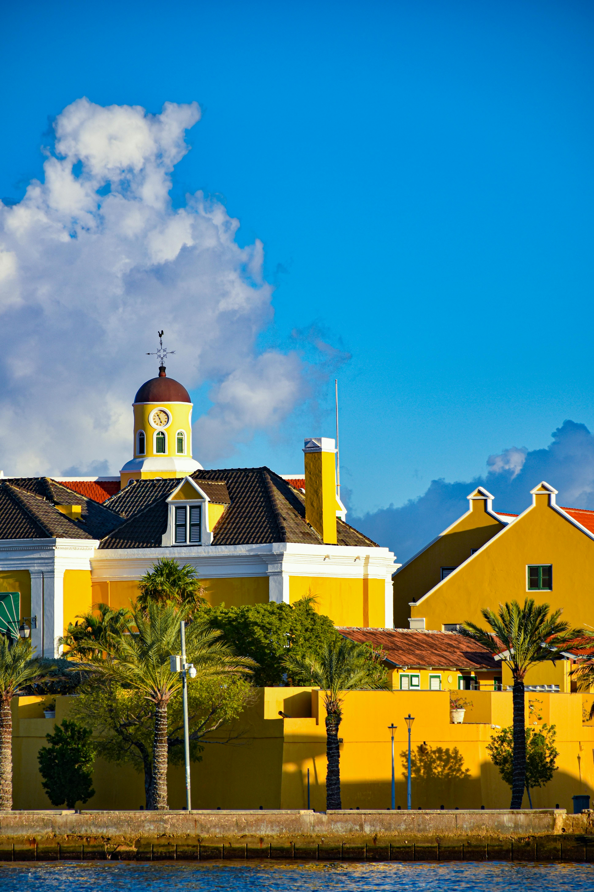
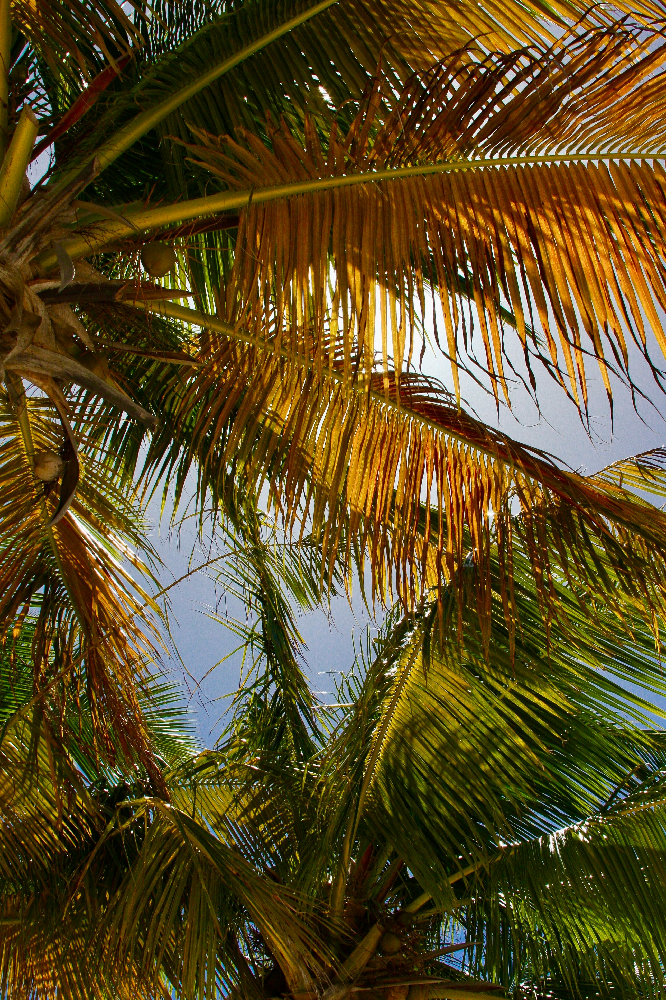
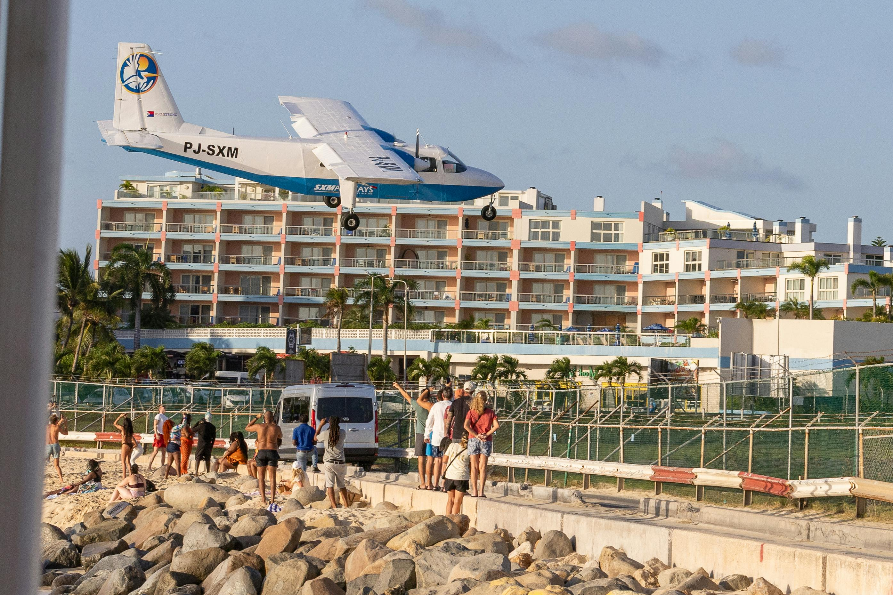

We spent a weekend on Sint Maarten and Saint Martin during our Caribbean island-hopping from Martinique — and it ended up being one of the highlights of the entire trip. One island, two countries, two completely different personalities. We hired a local guide who drove us across both sides — teaching us Pidgin English with enormous humour, bringing us to Maho Beach to watch planes land inches over our heads, introducing us to the glamour of Marigot marina and the restaurants of Grand Case, and — entirely without warning — stopping at one of the French side's famous nudist beaches. A weekend we will never forget.



We had hired a local guide to drive us around the island for the day and it was one of the best decisions we made anywhere in the Caribbean. He knew every beach, every viewpoint, every back road and every story — and he told them all with the kind of warmth and humour that makes you feel like you have known someone for years within the first twenty minutes.
The Pidgin English lessons became a running joke throughout the day. He would teach us a phrase — something simple, something he clearly found very easy — and we would attempt to repeat it back with our Irish accents and completely mangle it every single time. The worse we got, the more entertained he became. By the time we had crossed the island twice we had learned approximately nothing useful but had laughed more than on almost any other day of the entire trip.
The island itself is extraordinary — not just for the beaches and the food and the glamour, but for the simple fact that you can cross from one country to another in a matter of minutes with no border controls, no passport check, no formalities of any kind. One moment you are in the Netherlands Antilles, the next you are in France. The contrast between the two sides is remarkable and the guide brought it to life brilliantly.
Maho Beach is one of the most extraordinary and exhilarating experiences we have ever had — and we had absolutely no idea what to expect when the guide pulled up and told us to get out of the car. The beach sits directly at the end of the runway at Princess Juliana International Airport, and the planes come in so impossibly low over the sand that you genuinely cannot believe what you are seeing.
We stood at the fence at the end of the runway as a plane came in on final approach. The noise builds from a distant rumble to a physically overwhelming roar. The plane gets bigger and bigger. And then it passes directly over your head — engines screaming, wheels already down, close enough that you feel the heat of the exhaust — and touches down on the runway literally metres away. The blast from the engines nearly knocked us off our feet.
It is completely and utterly insane in the best possible way. People sit on the beach with their chairs aimed directly at the flight path. Children wave at the cockpit windows. Some visitors hold on to the fence behind the runway threshold as the jet blast tries to throw them into the sea. We watched several arrivals and every single one was as jaw-dropping as the first. One of the greatest aviation spectacles in the world — and it is free to watch.
The French side of Saint Martin has a long and entirely unapologetic tradition of clothing-optional beaches — this is France, after all, and they take a somewhat different view of these matters than the Irish. Orient Bay is the most famous, with dedicated naturist sections that attract visitors from across the world. Our guide, with impeccable comic timing, chose to mention none of this until we had already parked, walked down to the beach and were well into the process of piecing it together for ourselves.
The realisation dawned slowly. You notice that something seems slightly different. Then you look a bit more carefully. Then you realise. Then you look at each other. Then you look at your guide, who is sitting on a rock with the expression of a man who has done this exact thing many times before and never tires of it.
It remains one of the funniest moments of our entire Caribbean adventure. The beach itself was beautiful — the French side's beaches invariably are. We stayed for a while, conducted ourselves with tremendous dignity and decorum, and then got back in the car and drove away, at which point everyone including the guide burst out laughing for approximately ten minutes.
The French side of the island has a completely different character to the Dutch — more elegant, more sophisticated, with the unmistakable influence of France on everything from the architecture to the food to the general attitude. It is the Caribbean done with a Parisian sensibility and the result is something genuinely beautiful.
Marigot is the capital of the French side and it is stunning — a beautiful waterfront town with a bustling marina packed with enormous luxury yachts, a wonderful open-air market selling local produce and crafts, designer boutiques, waterfront cafés and that particular French-Caribbean atmosphere where you are simultaneously in the tropics and somehow in France. We drove through it slowly, windows down, completely charmed.
Grand Case is the undisputed restaurant capital of the Caribbean — a single beachfront street lined with French and Creole restaurants of extraordinary quality, colourful buildings overlooking the sea and the kind of food that makes you want to extend your stay by several days. The quality of cooking in Grand Case is genuinely remarkable for an island this size. If you eat one proper meal on your visit to Saint Martin, eat it in Grand Case.
The drive between the two towns takes you through some of the most beautiful coastal scenery on the island — palm-lined roads, scenic viewpoints over the turquoise lagoons and glimpses of beaches that seem almost too perfect to be real.
The best decision we made on the island. He knew every road, every story and exactly how to make a day tour feel like an adventure with an old friend. The Pidgin English lessons alone were worth the price of admission.
Planes landing inches over your head — the roar, the heat, the sheer insanity of it. One of the most extraordinary aviation spectacles in the world and completely free to watch. Absolutely unmissable.
Arriving oblivious, piecing it together slowly, looking at our guide — who had said nothing and was watching our faces with complete delight. One of the funniest moments of the entire Caribbean trip.
Enormous luxury yachts, beautiful waterfront restaurants, designer boutiques and the most glamorous Caribbean atmosphere we encountered anywhere. French sophistication meets tropical island — and it works perfectly.
The restaurant capital of the Caribbean — a single beachfront street with an extraordinary concentration of brilliant French and Creole cooking. If you eat one proper meal on the island, eat it in Grand Case.
Crossing between the Netherlands and France — in the Caribbean — multiple times in a single day with no passport, no border control and no formalities. One of the most fascinatingly unusual geographical experiences we have had anywhere.
A guided island tour — like the one we did with our local guide — is by far the best way to see both sides of Sint Maarten and Saint Martin properly. You get the stories, the hidden spots, the context and the humour that you would simply never get from a resort sun lounger. TourRadar has great Caribbean options covering Sint Maarten.
Disclosure: This is an affiliate link. If you book through it we may earn a small commission at no extra cost to you.
From island tours and Maho Beach experiences to catamaran cruises, snorkelling trips and day excursions across both sides of the island — book your Sint Maarten activities in advance.
Disclosure: If you book through this link we may earn a small commission at no extra cost to you.
The French side of Saint Martin has some of the finest boutique hotels and resort properties in the Caribbean — close to the beaches, Marigot marina and the Grand Case restaurant strip. Browse the best options on Klook.
Disclosure: This is an affiliate link. If you book through it we may earn a small commission at no extra cost to you.
Common questions
What to pack for Sint Maarten
Beaches, island tours, fine dining on the French side and jet blast at Maho — Sint Maarten needs practical tropical packing. These are the things we'd bring without hesitation.
Useful across both the Dutch and French sides — note you may switch between networks as you cross the border.
View on Amazon →Caribbean sun plus white sand beaches plus standing at Maho watching planes — you will burn fast without proper SPF.
View on Amazon →For exploring Marigot market, Grand Case village and island tour stops. Flip flops alone won't cover everything.
View on Amazon →A full day island tour drains your phone fast — essential for maps, photos at Maho and keeping up with the guide.
View on Amazon →The Dutch side uses US-style plugs; the French side uses European two-pin. A universal adaptor covers both.
View on Amazon →Essential for tropical evenings — especially if you are dining outside in Grand Case or exploring the French side's quieter beaches.
View on Amazon →Disclosure: These are Amazon affiliate links. If you buy through them we may earn a small commission at no extra cost to you.
Sint Maarten was part of a bigger Caribbean island-hopping adventure — read the rest of it below.
Just 20 minutes by ferry from Marigot — hidden beaches, free-range chickens and the most carefree island in the Caribbean.
Read the Anguilla guide →The Jazz Festival, Steven Seagal on stage, the Gros Islet street party and the extraordinary Pitons rising from the sea.
Read the St Lucia guide →A year living on the Island of Flowers — the base for all of this Caribbean island hopping.
Read the Martinique guide →Hire a local guide, stand at Maho Beach as a plane comes in, eat in Grand Case, wander the Marigot marina and let the island surprise you. Sint Maarten is one of the most varied and genuinely unforgettable islands in the Caribbean.
Affiliate disclosure: if you book through our links we may earn a small commission at no cost to you. We only recommend experiences we've done ourselves.